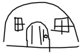
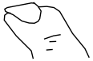
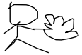
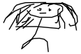
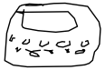
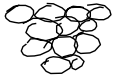
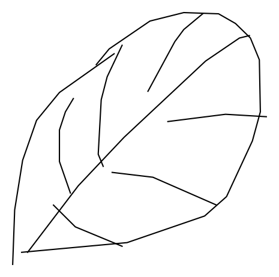

This is an exploratory piece best suited for desktop.
Analyzing hand drawn doodles to explore cultural variations.
By Vaishali Verma
What if you were told to draw a
house
 ?
Or a nail  ?
Or a fan  ?
As I write this, the dishwasher that comes to your mind may not be the same as the dishwasher  that comes to my mind.
The blackberry  that someone ponders about, may not be the same blackberry  that was meant.
Or a leaf in Canada may not be the same leaf  that most people think of.
Who can say if the images you have in mind as you read these words are the same images I had in mind as I typed them.
Recently, I moved from India to Boston and while making this move I had accounted for change in climate, food, friends, their accent and home. Everything that had a physical attribute and could be measured, was measured using rules and scales. There was still a lot of see-it-to-believe-it stuff that was out of my calculations.
The above situations left me surprised more than I could imagine and defied all my traditional measurement systems. And these were just a few.
I had clearly missed taking into account the culture and lifestyle of this new place and its people.
I try to explain this delta, the triangle of difference that I developed while navigating the World, to show how our cultures shape our instincts. This story is an attempt to explore more cases of these gentle differences to find similar company of people from across the World.
I found these people when I attempted to explore Google's Quick Draw dataset a game in which a person has 20 seconds to draw to prompts like ‘asparagus’ and ‘fireplace’. It’s fun but the real use of this data is to train machines to mimic human brain. Just like the human brain is made up of neurons and synapses, a neural network which is a type of artificial intelligence that consists of ‘nodes’ or neurons connected by ‘lines’ or weights in a kind of web. By collecting drawings from people around the World, this AI tries to enhance its ability to understand human generated visual content.
While humans remember visuals by what they represent, this AI stores every visual in a series of vector array along with other meta data. This is an example of a house and how its vectors are plotted.
"word" : "house",
"countrycode" : "US",
"timestamp" : "2017-03-11 19:09:26.08877 UTC",
"recognized" : true,
"key_id" : "5054419760578560"
"drawing" : [
[
[9,9,13,19,23,41,62,129,145,164,166,161,141,132,0],
[108,212,239,252,255,255,253,236,231,220,189,164,100,85,108]
],
[
[3,3,14,44,63,75,100,135],[107,92,68,22,1,0,16,72]
],
[
[27,22,25,37,60,65,63,22],[157,162,203,210,210,203,148,148]
],
[
[13,49,74],[185,187,184]
],
[
[38,42],[156,212]
]
]
Click Play
recognized: true
The recognized metadata is AI’s output of personal understanding.
If the player was told to draw a cat and the AI recognized the drawing as a cat, the boolean value would be ‘true’. If the drawing is outside the scope of AI’s understanding spectrum, say the player draw a cat in a way that this AI had never seen before, the boolean value is ‘false’.
I went on to analyze the origin of these drawings, location of these players. But participation in this game is likely a factor of player location, availability of internet and efforts made to promote the game in that region.
The United States has a lion’s share of participation with 250 thousand drawings, the outer rectangle in the visualization below showing it’s entires. United Kingdom is far second with 41,000 entries which is less than 25% of United States entries.
Click Play for legend, after that click on country names to see their proportions.
Methodology: Entires from House, Dishwasher, Fan and Blackberry datasets were summed and distributed by Countries. Percent calculation of entires of drawings from each country in proportion to United States. Percent calculation of recognized and unrecognized drawings for each country based on total number of drawings. Python for data processing and javascript for visualizing.
Korea had 95% of its drawings recognized, followed by Japan at 93%.
While Zimbabwe had the least at 56%, followed by Iraq at 74%.
Tunisia, Cyprus, Maldives, Bermuda had less than 10,000 entries and at the extreme bottom were Ethiopia, Mali, Guinea with less than 20 entires.
Subsetting drawings that went unrecognized
recognized : false in the dataset, there is a diverse
trend of culture. AI was unable to identify these drawings either due
to human imperfection or abstract representations of concepts. We can
only assume the AI models training dataset might not included
sufficient examples of certain types of drawings leading to lower
recognition rate. These are opportunities where the AI model could
improve and this game continues to provides valuable data for
retraining and refining its model.
It may be safe to assume that only the most promising version of what could be happening in a developed country may have been used for training. And went on to analyze almost all categories to find stories, I settled down on a few that I thought were the best representation of human diversity. I have to admit my personal bias here.
I could only look for stories that I have experienced. For others, I failed to identify them even when they were staring right into my eye.
There are a lot of stories in drawings that went unrecognized by the neural network.
Click the words below, then hover over the doodles.
Methodology: Unrecognized drawings considered from House, Dishwasher, Fan and Blackberry datasets. Key ids of this trimmed dataset distributed by country.Then first 2000 drawings curated manually to find stories and visualized above. Python for data processing and javascript for visualizing.
A horse for a house?
There could be a few reasons for this mixup:
Cognitive slip: some players may have had a momentary lapse in attention or memory and drew the first thing that came to mind thinking of word that starts with ‘ho-‘.
Language barriers: the game starts in English with an option to change to a few languages using control at bottom right. If the player speaks a different language and missed the option, it is likely they were confused.
Having pondered about cognitive abilities and language barriers, this got me to explore the most basic level at which people can perceive differently. Shapes like line, square, rectangle are the most basic units of drawings that enrich our visual language.
Click the words below, then hover over the doodles.
Methodology: Drawing area was divided into 4 quadrants. Direction calculated by observing location of first and second point of stroke. Top 2 single strokes considered. Python for data process and javascript for visualizing.
Most common single stroke square is starting from top left and working clockwise. Most common pattern for a line is left to right. Almost half the people prefer to draw a circle starting from top and going counter clockwise. Whereas most triangles start at the top and work their way counter clockwise.
The location of a player can profoundly affect how they perceive and create shapes. Surely globalization may have grayed out some areas, but it does not play a role huge enough in order to catch up with cultural influence of cognition and human perception.
Every culture’s history, philosophy and values can be seen in the way its people draw and interpret visual language.
And so it’s been a while I’ve been calling Boston my home. Have made friends, visited places, seen museums and had a lot of food. But even then, when I look at certain things I have not grown up with, there is a thought for a fraction of a second - wow, this is new!